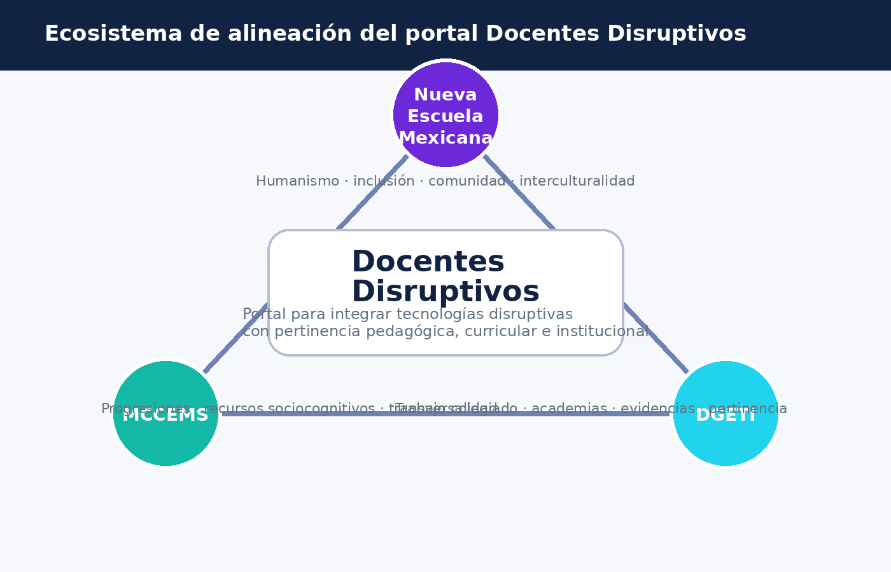

Ecosistema de alineación
La propuesta se ubica en el cruce entre principios humanistas, estructura curricular y operación institucional. Esta imagen funciona como diagrama de síntesis para explicar la arquitectura conceptual del portal.
La estructura del portal convierte los fundamentos de tu tesis en una experiencia didáctica. Aquí se muestran los principios, las teorías de soporte, la alineación institucional y un instrumento real para abrir el pilotaje.
La propuesta se ubica en el cruce entre principios humanistas, estructura curricular y operación institucional. Esta imagen funciona como diagrama de síntesis para explicar la arquitectura conceptual del portal.

Ayuda a que el docente no se quede solo en la tecnología: articula saber disciplinar, pedagógico y tecnológico para una integración coherente.
Sirve para valorar el nivel de transformación de las actividades: sustituir, aumentar, modificar o redefinir la experiencia de aprendizaje.
Orienta al diseño accesible y flexible mediante múltiples formas de representación, acción y participación.
Es pertinente para tesis con prototipo porque favorece diseñar, pilotar, recoger datos y refinar la propuesta en contexto real.
Fortalece la idea de aprender en red, compartir recursos y construir comunidad académica mediante interacciones digitales.
Permite recoger evidencias significativas del desempeño docente y del aprendizaje estudiantil durante la implementación.
Este formulario hace operativa la primera fase del pilotaje. Captura condiciones del plantel, nivel de competencia digital y meta prioritaria.
| Fase | Qué hace el portal | Producto esperado |
|---|---|---|
| Diagnóstico | Activa el formulario inicial y personaliza la ruta. | Perfil docente y meta de pilotaje. |
| Alineación | Explica vínculos entre NEM, MCCEMS y DGETI. | Matriz curricular básica. |
| Diseño | Permite guardar una secuencia didáctica. | Planeación contextualizada. |
| Implementación | Vincula recursos, webinar y módulo activo. | Registro de aplicación. |
| Evaluación | Recibe evidencias y visualiza indicadores. | Portafolio e informe básico. |